Google検索広告
サービスを探している人に
見つけてもらう。
「バンコク 脱毛サロン」など、地域とサービス名で検索する人へ。検索内容に合った広告を届けます。
検索例：バンコク 脱毛サロン
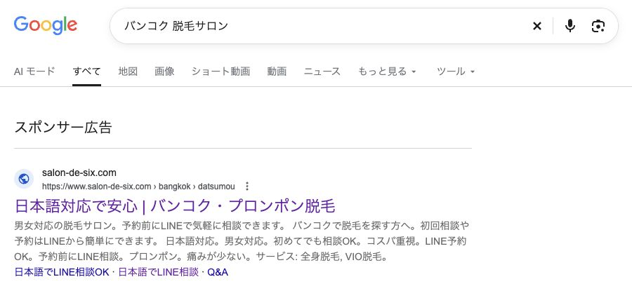
ご提案するリンク先の設計
Google検索広告
サービス専用のLPへ
広告のリンク先をLPに設定。
内容・料金・選ばれる理由を、
ひとつのページで詳しく。

ほかにも、こんな検索からバンコク 美容バンコク 歯医者
集客から予約対応まで、ひとつの導線に。

ネット広告
運用実績
ランディングページ
制作実績
LINE自動対応・予約
1日の対応時間


見せる順番で、
気持ちが動く。


横スクロールで日本語・英語・タイ語のLPをご覧いただけます
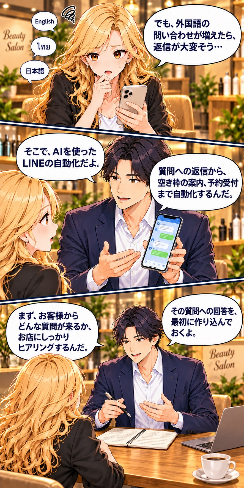
お店に合わせて、最初に準備
お店で確認した内容をもとに、
問い合わせが来た言語に合わせて回答。
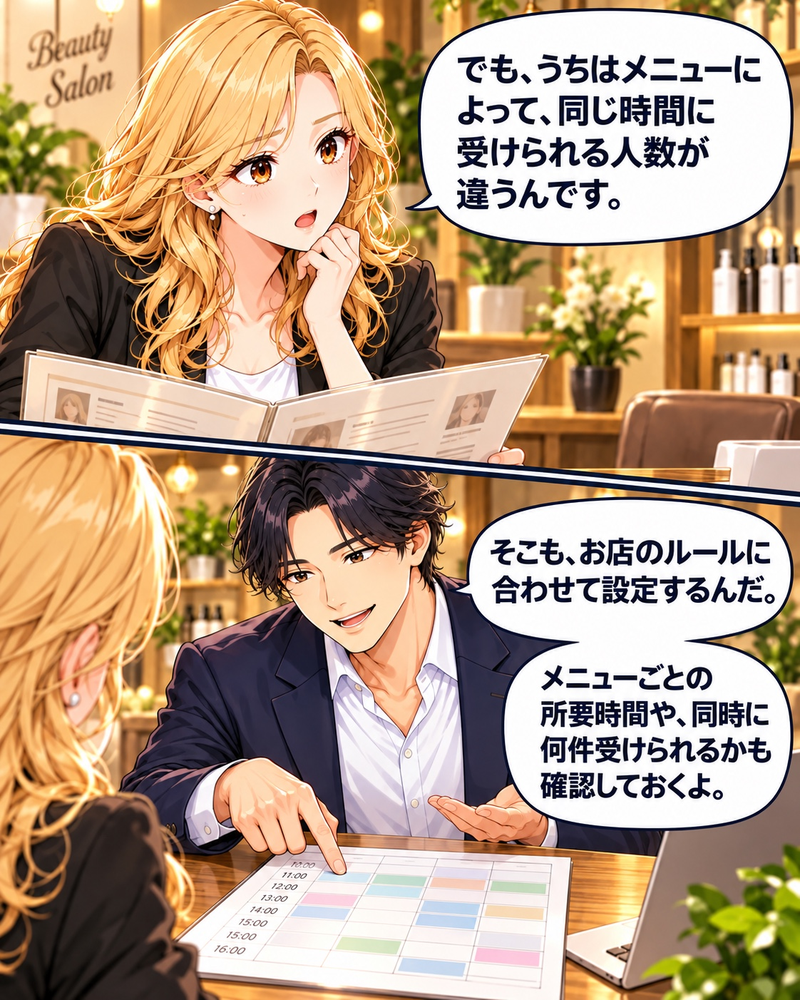
| 設定する内容 | ルールの例 |
|---|---|
| メニューごとの 所要時間 | 脱毛は60分、 ホワイトニングは60分 |
| メニューごとの 受付上限 | それぞれ1時間に1件まで |
| 同時に 受けられる条件 | スタッフ・設備に余裕があれば同時受付可能 |
| 予約できる時間 | 営業時間・休憩・準備時間を反映 |
メニューごとの枠と、
お店全体で同時に対応できる条件を整理します。
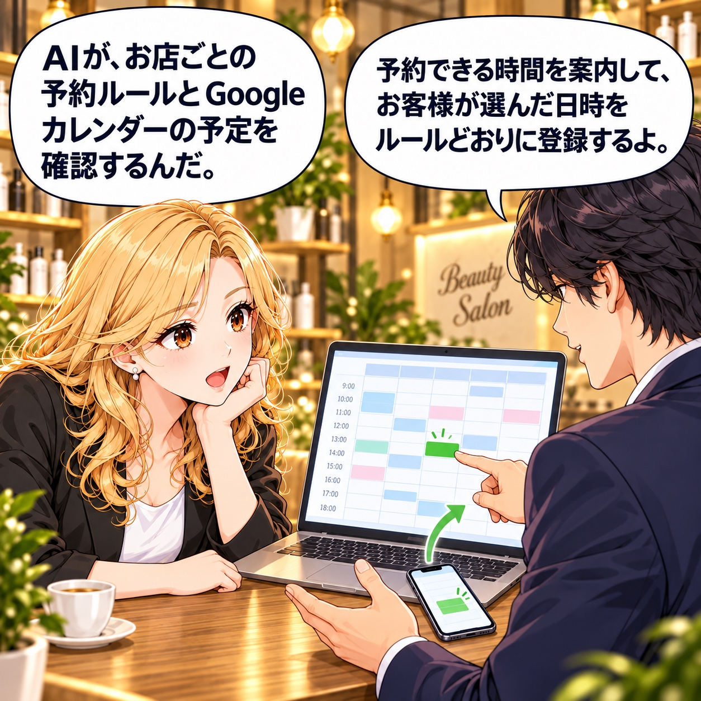
01 / 06 質問に回答
会話に触れると一時停止。
スマホ内を上下にスクロールして読み返せます。
質問への回答から、予約登録・完了案内まで。
会話・料金・予約枠は説明用の例です。このデモから実際の予約やメッセージ送信は行われません。
お店で確認が必要な質問は、無理に回答せず、人が確認する流れへつなぎます。
確認が必要な内容は、
スタッフが対応します。
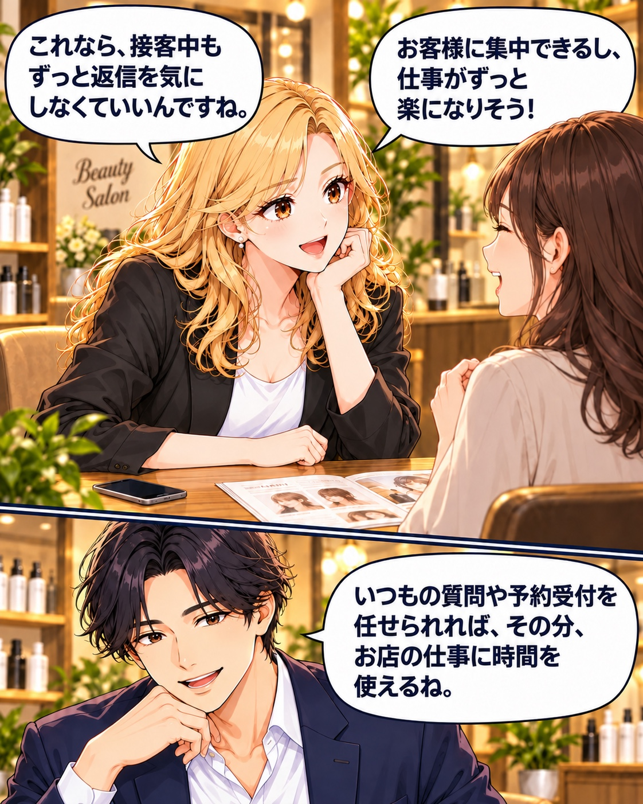
斎藤さん「バンコク 脱毛サロン」など、サービスを探している人に検索広告を出せるんだ。
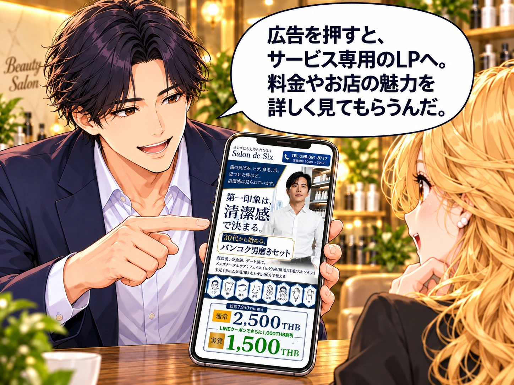
マリ私も「バンコク 焼肉」とか、Googleマップで探します！
斎藤さん近くのお店を探す人にも、マップ上の広告で見つけてもらえるよ。
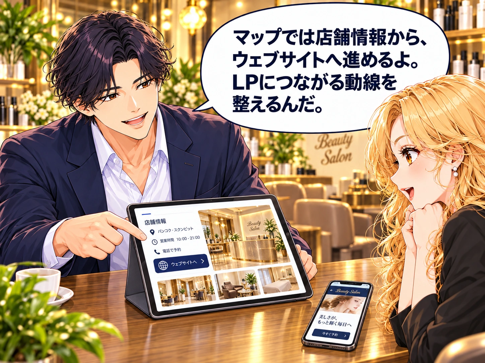
斎藤さん見つけてもらったら、LPで魅力を伝えて、LINEで質問・予約につなぐんだ。
お店を探す、2つの入口
検索しているそのときに、
お店を知ってもらうきっかけを。
Google検索広告
「バンコク 脱毛サロン」など、地域とサービス名で検索する人へ。検索内容に合った広告を届けます。

ご提案するリンク先の設計
Google検索広告
広告のリンク先をLPに設定。
内容・料金・選ばれる理由を、
ひとつのページで詳しく。
ほかにも、こんな検索からバンコク 美容バンコク 歯医者
Googleマップ広告
食事のお店や、通いやすいお店を探すとき。地図で場所を確かめている人にも、お店を見つけてもらう入口をつくります。
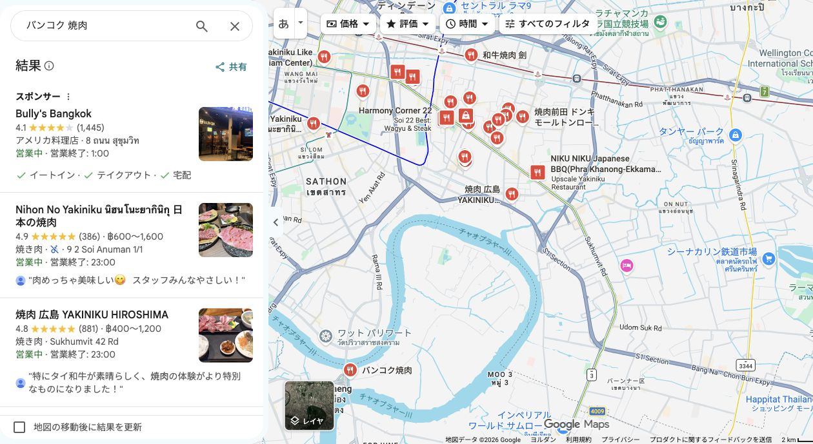
同じ実画面の「スポンサー」部分を拡大
店舗情報の「ウェブサイト」など、LPへ案内できる導線を設計します。
広告形式やクリックする箇所により、店舗情報・経路・電話・ウェブサイトなど、表示や移動先は異なります。すべてのクリックがLPに直接移動するわけではありません。
広告から、その先まで
広告とLPで伝える内容をそろえ、
来店・予約までの流れを設計します。
来店してほしいエリアと、探しているサービス、使う言語に合わせて広告を設計します。
日本語・英語・タイ語のLPへ。広告で気になった内容を、そのまま詳しく読めるようにします。
サービス内容、料金、お店の強みを順番に伝え、「このお店に行きたい」という気持ちにつなげます。
気になることを確認し、希望のメニューと日時を相談。お店に合わせたAI対応で予約受付へ進めます。
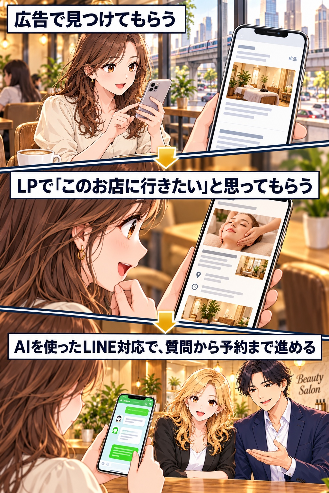
この流れを、お店に合わせて整えるのが
バンコク店舗集客セットです。
単品でのご依頼も可能です。
LP制作とLINEのAI自動化を同時にご依頼いただくと、セット割引が適用されます。広告運用は、ご希望に合わせて追加できるオプションです。
セット初期費用70,000 THB
LINE自動化の月額費用 2,000 THB／月
セット初期費用80,000 THB
LINE自動化の月額費用 2,000 THB／月
※日本語LP制作50,000バーツの基本構成をもとにしたセット価格です。広告運用は別途オプションです。
多言語LPは、日本語LPを制作いただいたお客様向けの追加サービスです。日本語版を土台に英語・タイ語へ展開します。英語のみ・タイ語のみの新規制作は、基本的に受け付けておりません。
リスティング広告・Googleマップ広告に対応。
例：広告費10,000 THB → 手数料2,000 THB
広告費20,000 THB → 手数料4,000 THB
Googleへ支払う広告費は、運用手数料とは別途必要です。広告を出すかどうか、運用を依頼するかどうかは、お客様に選んでいただけます。
Googleカレンダーを活用した標準的な構成を基本とし、独自システムへの組み込みは仕様を確認して対応範囲をご案内します。個別開発が必要な場合は、別途お見積もりとなります。
まずはLINEで、お店のことをお聞かせください。お店の情報や写真をもとに、スマホLPのメイン画像ラフを1案、無料でご提案します。仕上がりのイメージとお見積もりをご確認いただいてから、本制作へ進みます。
「無料ラフを相談したい」とLINEでお知らせください。
お店の業種や、集客・予約対応でお困りのことを伺います。
サービス内容、料金、強み、来てほしいお客様、お店のイメージを確認します。
お店・サービスの写真やロゴなど、制作に必要な素材をご提供いただきます。
伺った内容をもとに、スマホLPの最初に表示されるメイン画像のラフ案を1案お見せします。
デザインの方向性と、制作内容・費用をご確認ください。
ご提案内容とお見積もりにご納得いただけましたら、正式なご依頼へ進みます。
着手金のお支払い後、本制作を開始します。
お客様が知りたい情報と、お店の魅力が伝わる順番を整理します。
LPの企画・構成・文章はZEROが作成し、内容をご確認いただきます。
お客様が原稿をすべて書く必要はありません。
最初にファーストビューのデザインを決定します。
そのデザインに合わせて下のセクションを制作し、スマホで見やすいページに仕上げます。
多言語をご依頼の場合は、日本語版を土台に英語・タイ語へ展開します。
セットをご依頼の場合は、LP制作と並行して、よくある質問と回答、メニュー、所要時間、受付可能件数などをヒアリングします。
店舗ごとのルールに合わせ、Googleカレンダーと連動した質問対応・空き枠案内・予約受付を実装します。
LPの表示、問い合わせへの導線、LINEの回答・予約の流れを確認します。
必要な調整を行い、ご依頼範囲に合わせて納品します。
はい。お店についてヒアリングしたうえで、スマホLPのメイン画像ラフを1案、無料でご提案します。デザインの方向性とお見積もりをご確認いただいてから、本制作をご検討いただけます。
はい。それぞれ単品でご依頼いただけます。日本語LPは50,000バーツ〜、LINEのAI自動化は初期30,000バーツ・月額2,000バーツです。同時にご依頼いただくとセット割引が適用されます。
今あるホームページを活かしながら、特定のサービスや商品の予約につなげるLPを追加する形でご相談いただけます。既存サイトとのつなぎ方は、現在の構成を確認してご提案します。
はい。ヒアリングした内容をもとに、企画・構成・文章はZEROが作成します。お店の情報や、写真・ロゴなどの素材をご提供ください。
まずは、今ある写真や資料の状況をお知らせください。必要な素材を整理し、ご用意いただくものをご案内します。撮影や素材の新規制作が必要な場合は、対応内容と費用を確認します。
日本語LPを制作いただいたお客様には、英語・タイ語版を各1ページ10,000バーツで追加制作できます。日本語版を土台に展開するため、英語のみ・タイ語のみの新規制作は基本的に受け付けておりません。
メニューごとの所要時間、同時に受けられる件数、スタッフや設備の条件などを事前に確認し、お店に合わせた予約ルールを設定します。Googleカレンダーとの連動を基本に、必要な機能をご案内します。
事前に準備した情報で回答できない内容は、スタッフへ確認・引き継ぎする流れを設定します。どこまで自動対応し、どの場面で人が対応するかを、お店と相談して決めます。
既存システムの仕様を確認したうえで、連携方法をご相談いただけます。個別開発が必要な場合は別途お見積もりです。Googleカレンダーを活用する構成は、導入の手間や費用を抑えやすい方法としてご案内しています。
広告運用は任意のオプションです。Googleへ支払う広告費は運用手数料とは別途必要です。月額広告費10,000バーツ以下は運用手数料2,000バーツ、10,000バーツを超える場合は広告費の20％です。
ページの内容、対応言語、LINEの連携仕様、素材のご準備状況によって変わります。ヒアリング後、制作前にスケジュールをご案内します。
無料ラフとお見積もりをご確認いただき、正式なご依頼後に着手金をお支払いいただきます。金額と支払い条件は、ご依頼前にご案内します。
LP制作を専門に、13年。
日本で培った経験を、
バンコクのお店へ。
株式会社ゼロは、東京都港区にある日本の会社です。
ランディングページ制作を専門に創業し、13年。これまでに300社以上のLP制作、100社以上の広告運用を手がけてきました。
私たちが大切にしているのは、お店の魅力を整理し、お客様が「ここに行きたい」と思える順番で伝えることです。
企画・構成・文章・デザインから、広告、LINEを使った質問対応・予約受付まで。バンコクの店舗に向けて、Webとマーケティングの両面から支援しています。


← 指で横にスワイプして見られます →
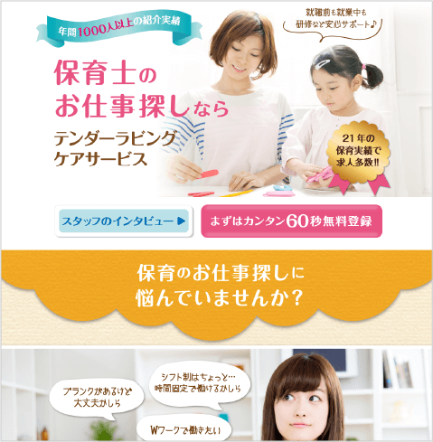
成約率（CVR）の変化
0.55%0.92%
1.67倍UP
求人案件の強みを整理し、PC・スマホのLPを改善。

成約率（CVR）の変化
0.45%1.22%
2.71倍UP
LPの訴求・構成と、広告アカウント・バナーを改善。

成約率（CVR）の変化
0.45%1.52%
3.37倍UP
テレビ広告と連動したリスティング等の広告配信。

成約率（CVR）の変化
0.62%0.98%
1.58倍UP
商品の魅力を伝えるLPを制作し、広告のリンク先を変更。
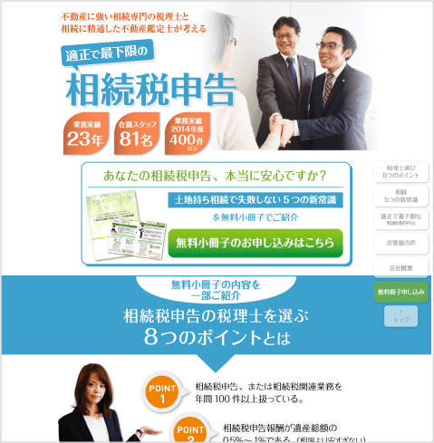
成約率（CVR）の変化
0.45%1.78%
3.95倍UP
小冊子の無料提供を入口にしたLPで見込み客を獲得。
← 指で横にスワイプして見られます →
※掲載数値は各案件の施策前後の事例です。LP改善と広告施策等を組み合わせた事例を含みます。
バンコクで、お店の集客を伸ばすチャンスを一緒に見つけたい。
魅力を伝えるページと、質問・予約まで進みやすい仕組みを整えることで、まだ取り組めることがあると私たちは考えています。
ご相談いただいたお店には、一店一店の強みと課題に向き合い、売上を伸ばすために何ができるかを一緒に考えます。
日本で培った制作・運用の経験を活かし、ご相談から制作・導入まで、丁寧に進めます。お店のことを、まずはお聞かせください。
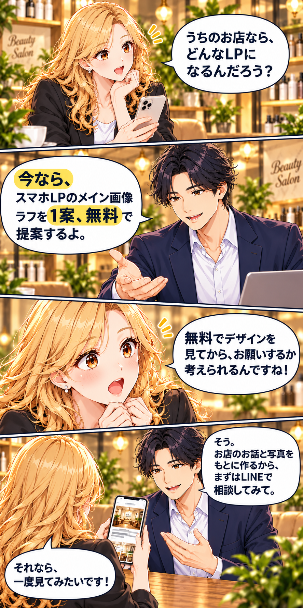
お店の魅力を、どんなページで伝えられるのか。
まずはデザインのイメージをご覧ください。
LINE相談先を設定中です。
お店の情報・写真をもとに、メイン画像のラフ案をご提案します。